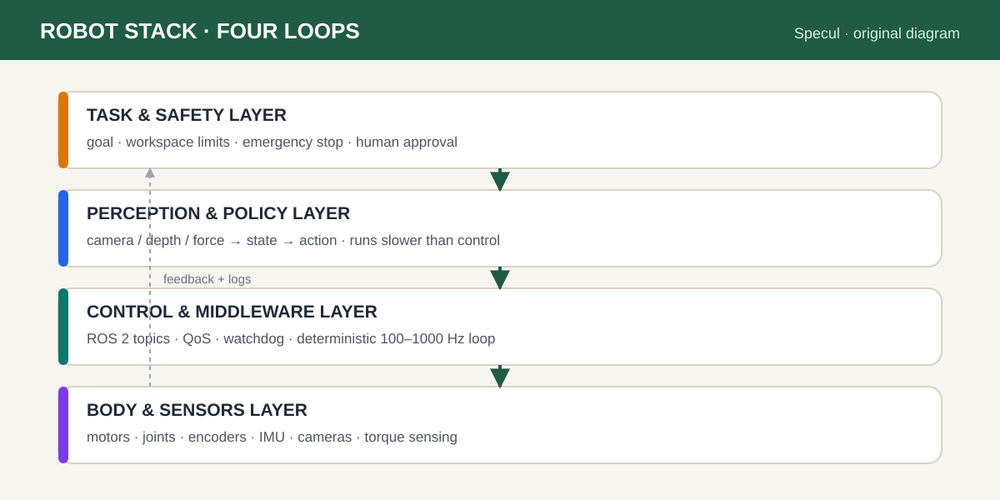

领域深度 · 机器人与具身Field guide · Robotics & embodied AI
机器人与具身：先跑通一个能重复的动作Robotics and embodied AI: make one action repeatable first
视频里的人形机器人会叠衣服，你买回一台，连把方块放进盒子都要重调。机器人不是“一个大模型”，而是本体、传感器、控制栈、策略、仿真和评测一起工作。先让一个动作在真实环境里重复 100 次，再谈人形和通用。The humanoid in the video folds laundry. Yours cannot put a block in a box without retuning. A robot is not one large model; body, sensors, control stack, policy, simulation and evaluation work together. Make one action repeat 100 times in the real world before talking about humanoids or generality.
- 先定一个动作、一个物体、一个成功判定。Fix one action, one object and one success test.
- 仿真能加速，但不能替代真机上的 100 次重复。Simulation speeds things up; it does not replace 100 real-world repeats.
- 先记录失败，再谈泛化。Record failures before talking about generalisation.
完整版从下面开始；表格是查的时候用，不用背。The full guide starts below. Use the tables for reference; you do not need to memorise them.
假设一个具体活：让机械臂把桌上的方块放进盒子，允许 3 次里成功 2 次，先把这条跑通，不碰人形。Take one concrete job: a arm picks a block and puts it in a box, succeeding twice out of three attempts. Get that working before touching a humanoid.

1 · 把四层拆开，不要混成一个「机器人模型」1 · Separate four layers instead of one “robot model”
本体与传感器层负责「现在在哪、周围有什么、关节受多大力」。控制与中间件层负责「按时、按安全边界把动作发出去」。感知与策略层负责「根据看到的东西决定下一步」。任务与安全层负责「这件事该不该做、做到什么程度必须停」。The body and sensor layer answers “where am I, what is around me and how much force is at each joint”. The control and middleware layer sends actions on time and within safety limits. The perception and policy layer decides the next action from what is sensed. The task and safety layer decides whether the task should run at all, and when to stop.
大模型通常落在感知 / 策略层，或者更上面的任务层。它输出的是「意图、动作片段或坐标」，不是电机电流。把云端推理直接接进 100–1000 Hz 的控制环，延迟和抖动会先于智能把系统搞坏。A large model usually sits in the perception/policy layer, or above it in the task layer. It outputs intents, action chunks or coordinates — not motor current. Putting cloud inference directly into a 100–1000 Hz control loop makes latency and jitter break the system before intelligence matters.
一个可用的分层判据：如果某段逻辑失败时必须「立刻停机」，它属于控制 / 安全层。如果失败时可以「停下来等人确认」，它可以放在策略 / 任务层。A useful test: if a failure must trigger an immediate stop, the logic belongs in control/safety; if a failure can pause for a human decision, it can live in policy/task.
| 层Layer | 回答的问题Question | 典型组件Typical components |
|---|---|---|
| 任务与安全Task & safety | 做什么、何时停、谁批准What to do, when to stop, who approves | 任务编排、权限、急停、风险评估Task orchestration, permissions, e-stop, risk assessment |
| 感知与策略Perception & policy | 看到什么、下一步做什么What is sensed, what to do next | 视觉 / 深度 / 力觉、VLA、模仿学习策略Vision/depth/force, VLA, imitation policies |
| 控制与中间件Control & middleware | 怎样按时、稳定地执行How to execute on time and stably | ROS 2、DDS、PLC、EtherCAT、watchdogROS 2, DDS, PLC, EtherCAT, watchdog |
| 本体与传感器Body & sensors | 物理上能做什么What is physically possible | 关节、电机、编码器、相机、IMU、力传感器Joints, motors, encoders, cameras, IMUs, force sensors |
2 · 本体：先选任务，不要先选人形2 · Body: choose the task before the humanoid
轮式底盘、固定机械臂、协作机械臂和足式人形是四种不同的工程问题。固定工位的机械臂最容易把「精度、重复性、安全围栏」做扎实。轮式底盘适合平坦地面的巡检与搬运。足式适合台阶、碎石等非结构化地形，但控制、能耗与跌倒风险都会上一个量级。A wheeled base, a fixed arm, a collaborative arm and a legged humanoid are four different engineering problems. A fixed arm makes precision, repeatability and fencing easiest. A wheeled base suits inspection and transport on flat floors. Legs suit steps and rubble, but control, energy and fall risk jump by an order of magnitude.
选本体时先写清四件事：要拿多重的物体（payload）、要够到多远（reach）、一次任务要跑多久（battery / duty cycle）、失败时会不会碰到人（safety distance）。这四项写不清，形态讨论就只是审美。Write down four things before choosing a body: payload, reach, battery/duty cycle and the safety distance to people when something fails. Without these four, the form-factor debate is aesthetics.
人形的价值在「为人类环境设计的环境」里——门把手、楼梯、工具。它的代价是自由度多、控制难、重心高、跌倒后果重。除非任务真的需要人类环境中的通用操作，否则先做专用形态更稳。A humanoid earns its keep in environments designed for humans — door handles, stairs, tools. The price is more degrees of freedom, harder control, a higher centre of gravity and worse fall consequences. Unless the task truly needs general operation in a human environment, a dedicated form is the safer first build.
3 · 传感器与时序：先问「什么时候拍的」，再问「看到了什么」3 · Sensors and timing: ask “when was this captured” before “what is in it”
机器人常见的传感器组合是 RGB 相机、深度相机、IMU、关节编码器和力 / 力矩传感器。每一路都有自己的时间戳、帧率和延迟。不做时间同步，融合出来的状态就是错的。一个 30 fps 的相机已经意味着 33 ms 的采样间隔，控制环却可能在 10 ms 内跑完一轮。A typical robot carries RGB and depth cameras, an IMU, joint encoders and force/torque sensors. Each stream has its own timestamp, rate and latency. Without time synchronisation, the fused state is wrong. A 30 fps camera already means a 33 ms sample interval, while the control loop may complete a cycle in 10 ms.
先做三件事：给每路数据打同一时钟源的时间戳。标定相机内参、外参和手眼关系。把「丢帧、过期、越界」当成一等失败，而不是让模型猜。深度相机在反光、透明和强光下会失效，力传感器在碰撞和装配时会饱和——这些都要在采集阶段记录。Do three things first: timestamp every stream against a shared clock; calibrate camera intrinsics, extrinsics and hand-eye geometry; treat dropped, stale and out-of-range data as first-class failures instead of asking the model to guess. Depth cameras fail on reflective, transparent and bright surfaces; force sensors saturate in collisions and assembly. Record these at collection time.
验收时不要只看「识别率」。要看端到端延迟分布（P50 / P95 / 最坏）、丢帧率、重新标定后的漂移，以及传感器失效时系统是否进入安全状态。Do not accept a system on recognition accuracy alone. Check end-to-end latency (P50 / P95 / worst case), dropped-frame rate, drift after recalibration, and whether the system enters a safe state when a sensor fails.
4 · 控制与中间件：实时性不是「跑得快」，是「每次都在截止时间前」4 · Control and middleware: real time means meeting every deadline, not running fast
ROS 2 提供发布 / 订阅、服务、动作、参数、生命周期和 QoS。它适合把感知、规划、记录和可视化连起来。但 QoS 配错（例如 reliable 队列堆积）、回调里做重活、或者让垃圾回收/网络抖动进入控制路径，都会让「实时」变成口号。ROS 2 provides publish/subscribe, services, actions, parameters, lifecycle and QoS. It is good for connecting perception, planning, logging and visualisation. But wrong QoS (for example a growing reliable queue), heavy work inside callbacks, or garbage collection and network jitter on the control path turn “real time” into a slogan.
硬实时的那一段通常交给 PLC、运动控制器或 EtherCAT 从站。ROS 2 负责上层编排和状态发布。急停必须是独立的安全链，不能依赖同一台通用计算机上的一个 Python 进程。The hard-real-time segment usually belongs to a PLC, motion controller or EtherCAT slave; ROS 2 handles orchestration and state publishing above it. The emergency stop must be an independent safety chain, not a Python process on the same general-purpose computer.
最低验收：看门狗能检测主循环停摆。通信中断时执行器进入预设安全位。日志能回放「指令—状态—动作」的时间线。没有回放，故障就只能靠猜。Minimum acceptance: a watchdog detects a stalled main loop; actuators go to a defined safe state when communication drops; logs can replay the command–state–action timeline. Without replay, failures are guessed.
5 · 模型与策略：VLA 是接口，不是魔法5 · Models and policies: VLA is an interface, not magic
VLA（视觉—语言—动作）模型把图像、指令和动作片段接在一起。它擅长把「把红色方块放到托盘左边」这类指令映射成动作序列，但它不保证物理可行性、不保证安全，也不保证跨场景泛化。策略输出必须经过运动学、碰撞和力限的安全过滤，才能下发。A VLA (vision–language–action) model connects images, instructions and action chunks. It is good at mapping instructions such as “put the red block left of the tray” to action sequences, but it does not guarantee physical feasibility, safety or generalisation to a new scene. Policy output must pass kinematic, collision and force-limit safety filters before it reaches the actuators.
数据是比模型更常见的瓶颈。真实机器人采集慢、贵、难以覆盖失败。仿真能扩大覆盖，但会引入渲染与物理的偏差。模仿学习适合有专家示范的固定任务。强化学习适合能大量试错且有可靠仿真的场景。两者都不能替代现场验收。Data is a more common bottleneck than the model. Real-robot collection is slow and expensive and rarely covers failures; simulation widens coverage but introduces rendering and physics gaps. Imitation suits fixed tasks with expert demonstrations; reinforcement learning suits settings where trial and error is cheap and simulation is trustworthy. Neither replaces on-site acceptance.
一个务实的选择顺序：固定任务 + 手工基线 → 加入感知辅助 → 加入学习策略 → 保留安全过滤与回退。不要一步跳到「端到端大模型控整机」。A pragmatic order: fixed task with a hand-coded baseline → add perception assistance → add a learned policy → keep safety filters and fallback. Do not jump straight to “end-to-end large model controls the whole machine”.
6 · 仿真与评测：先证明「会失败」，再证明「能成功」6 · Simulation and evaluation: prove it can fail before proving it can succeed
Isaac Sim、Gazebo、Webots 都能做场景、传感器和物理仿真，但它们的价值不是「跑起来好看」，而是能在受控条件下重复失败：光照变化、遮挡、反光、传感器噪声、物体滑移、通信延迟、急停触发。Isaac Sim, Gazebo and Webots can model scenes, sensors and physics. Their value is not a good-looking demo; it is repeatable failure under controlled conditions: lighting changes, occlusion, reflections, sensor noise, slipping objects, communication delay and e-stop triggers.
评测表至少要有：任务成功率与置信区间、平均 / 最坏完成时间、人工接管次数、碰撞 / 越界次数、恢复时间、以及每条失败的环境与日志。只报一个「成功率 95%」而不说样本、场景和失败定义，等于没报。An evaluation table needs: success rate with confidence interval, mean and worst completion time, human takeovers, collisions and boundary violations, recovery time, and the environment plus log for each failure. A bare “95% success” without sample size, scenes and failure definition is not a result.
仿真通过只是允许上真机的门票。真机验收要单独做：限速、限力、围栏、急停、人员进入检测，以及「模型输出越界时执行器怎么办」。Passing simulation is only a ticket to the real machine. Real-machine acceptance is separate: speed and force limits, fencing, e-stop, human-presence detection, and what the actuator does when the model output goes out of bounds.
7 · 安全与合规：标准是底线，风险评估才是起点7 · Safety and compliance: standards are a floor, risk assessment is the start
工业机器人通常要按 ISO 10218 系列做风险评估，协作场景还会涉及 ISO/TS 15066 的力与速度限制。具体适用条款、验收方式和当地法规要求，必须由有资质的安全人员结合现场确定。本页不替代安全评审，也不给合规结论。Industrial robots are commonly assessed against the ISO 10218 series; collaborative settings also involve the force and speed limits in ISO/TS 15066. The applicable clauses, acceptance method and local legal requirements must be fixed on site by qualified safety people. This page does not replace a safety review or give a compliance conclusion.
工程上先把三层保护分开：本体的物理限位与急停、控制层的速度 / 力 / 空间限制、任务层的权限与人工确认。任何一层被绕过，都不算「有安全」。Separate three protection layers in engineering: physical limits and e-stop on the body; speed, force and workspace limits in control; permissions and human confirmation in the task layer. If any layer can be bypassed, the system is not safe.
上线后仍要管理变更：换模型、换相机、换夹具、换地面、换任务，都可能让原来的风险评估失效。每次变更都要重新跑一遍受限场景与急停测试。Manage change after launch: a new model, camera, gripper, floor or task can invalidate the original risk assessment. Re-run the restricted scenarios and e-stop tests for every change.
8 · 最小落地路径8 · A minimum path to deployment
- 写清一个任务：输入物体、目标位置、成功标准、允许的失败方式。Write one task: input object, target location, success criterion and allowed failure modes.
- 搭一个手工基线：固定轨迹或遥操作，先证明机械与传感器能完成任务。Build a hand-coded baseline: a fixed trajectory or teleoperation that proves the mechanics and sensors can do the task.
- 把时间同步、标定、丢帧和失效检测做进采集与回放。Put time sync, calibration, dropped-frame and failure detection into collection and replay.
- 在仿真里跑失败矩阵，记录每条失败的环境与日志。Run a failure matrix in simulation, recording the environment and log for each failure.
- 上真机，限速限力，围栏与急停独立。每次只改一个变量。Move to the real machine with speed/force limits and independent fencing and e-stop; change one variable at a time.
- 让操作员参与验收：接管次数、恢复时间、误报与漏报都要记。Include operators in acceptance: takeovers, recovery time, false positives and misses all count.
- 把模型输出经过安全过滤，定义越界、超时、通信中断时的回退动作。Pass model output through a safety filter and define fallback on out-of-bounds, timeout and communication loss.
- 变更即复评：模型、传感器、夹具、场地、任务任一变化，重跑受限场景。Re-assess on change: any model, sensor, gripper, site or task change triggers the restricted scenarios again.
9 · 四个常见误区9 · Four common mistakes
- 「先做人形，再找场景」：形态先行会让自由度、成本和跌倒风险同时上升。“Build a humanoid, then find a use”: form-first raises degrees of freedom, cost and fall risk at the same time.
- 「演示视频就是能力」：视频剪掉了失败、接管和环境搭建，不能替代评测表。“The demo video is the capability”: it edits out failures, takeovers and setup, and cannot replace an evaluation table.
- 「大模型直接控电机」：把概率输出放进硬实时环，延迟与越界都没有安全边界。“Let the large model drive the motors”: probabilistic output in a hard-real-time loop has no safe bound on latency or out-of-range actions.
- 「仿真过了就能上线」：仿真缺少真实摩擦、反光、磨损、人员行为和急停链路。“Simulation passed, so it can ship”: simulation misses real friction, reflections, wear, human behaviour and the e-stop chain.
来源与延伸阅读Sources and further reading
以下链接用于核对事实、许可证与官方口径。外部页面可能更新；引用时以原文与核验日为准。These links are for checking facts, licences and official scope. External pages may change; cite the original text and check date.
- ROS 2 DocumentationROS 2 DocumentationROS 2 的发布 / 订阅、QoS、生命周期与实时性说明；版本以官方文档为准。ROS 2 publish/subscribe, QoS, lifecycle and real-time notes; the official docs define the current version.
- ROS 2 repositoryROS 2 repositoryROS 2 源码与发行版入口，用于核对中间件实现与版本。Source and distribution entry point for checking middleware implementations and releases.
- NVIDIA Isaac Sim documentationNVIDIA Isaac Sim documentation仿真场景、传感器与物理能力的官方说明；不把它当作真机安全证明。Official notes on scenes, sensors and physics; not a substitute for real-machine safety proof.
- ISO 10218-1ISO 10218-1工业机器人安全要求的标准入口；适用条款需由有资质人员确认。Entry point for industrial robot safety requirements; qualified people must confirm applicability.
- ISO/TS 15066ISO/TS 15066协作机器人力与速度限制的标准入口；本页只作延伸阅读。Entry point for collaborative robot force and speed limits; further reading only.
- 学 AI · 机器人中间件Learn · Robot middleware本站对机器人中间件与通信层的概念解释。Specul’s concept page on robot middleware and the communication layer.
- 学 AI · 机器人策略Learn · Robot policies策略、模仿学习与部署边界的概念页。Concept page on policies, imitation learning and deployment boundaries.
- 学 AI · 具身智能Learn · Embodied intelligence具身智能与纯文本智能的区别。The difference between embodied and text-only intelligence.
- 硬件算力 · 选型路径Compute · selection path本体、边缘算力与传感器的硬件门槛。Hardware thresholds for bodies, edge compute and sensors.
- AI 导航 · 机器人类目AI Directory · Robotics机器人与具身相关的站外 AI 网站目录，不是本站评测。AI Directory of robotics and embodied-AI sites; not a Specul review.
下一步Next
- 回到“用 AI 做机器人”路线Back to the robotics route
- 下一步：算清边缘设备的算力Next: budget the edge compute
- 看其他 15 条主题路线Browse the other 15 topic routes
如果你照着做时卡住了，先回到对应主题路线，不要从头重读。If you get stuck while following it, go back to the matching route instead of rereading the whole guide.
← 回到首页← Back to home 发现错误？提交纠错Spot an error? Send a correction